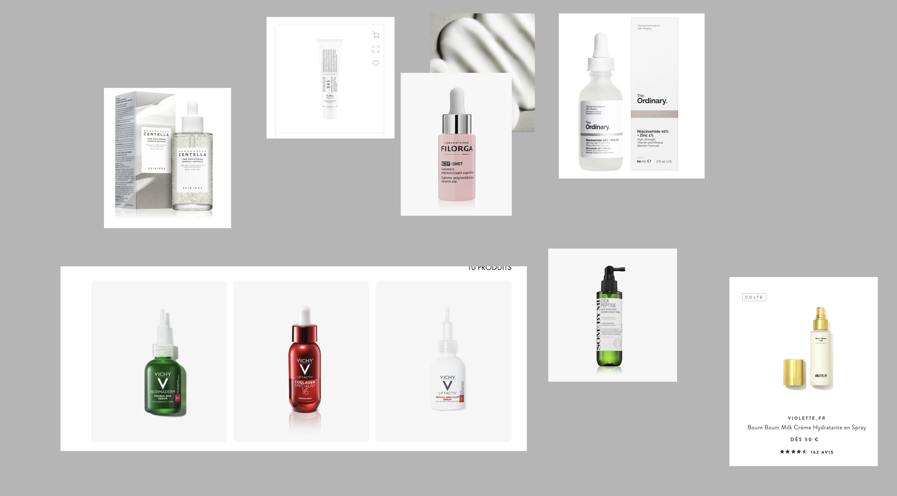
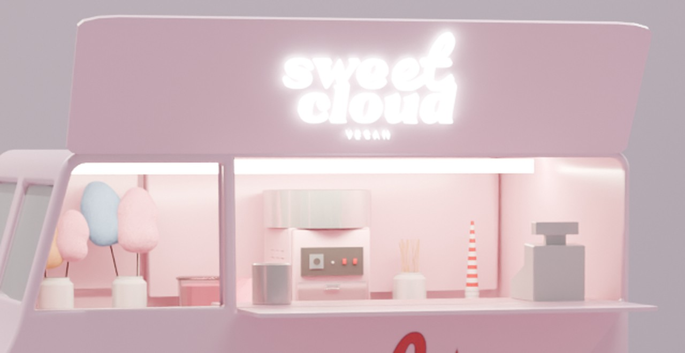
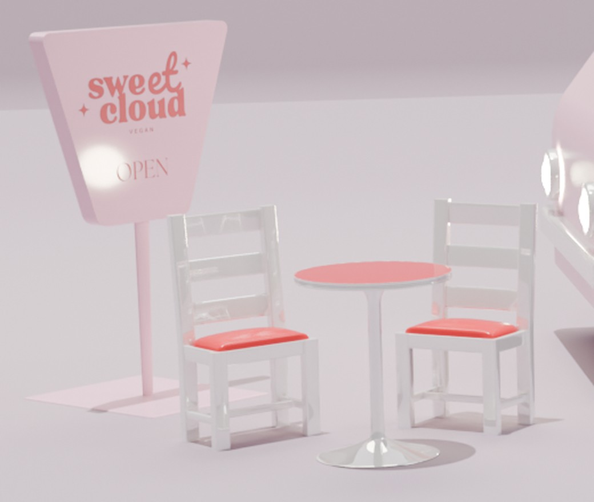

Student Digital Experience Design
Amel Ahriga
Ik ben designer
Ik creëer doordachte visuele ervaringen binnen drie disciplines: fotografie, XD/UI-design en 3D-design. Elk project hieronder is gegroepeerd per soort werk, zodat je meteen kunt zien wat je wilt bekijken.
Over mij
Mijn passie ligt bij design, creativiteit en digitale ervaringen. Ik vind het leuk om ideeën om te zetten in sterke visuele concepten, van UX/UI en branding tot fotografie en 3D. Daarbij combineer ik graag creativiteit met technologie om projecten te maken die niet alleen mooi zijn, maar ook goed werken.
Werk
Geselecteerde disciplines.
Vaardigheden
Tools en sterktes.
01 Design
- Figma
- UX/UI
- Wireframes
- Prototypes
- User-Centered Design
- Branding
02 Development
- HTML
- CSS
- JavaScript
- PHP
- Webflow
- React Native
- Shopify
03 Beeld & 3D
- Photoshop
- Illustrator
- Fotografie
- Lightroom
- Blender
2 projecten
Fotografie
Mode- en productfotografie opgebouwd rond zacht, doordacht licht en een strakke, editoriale uitstraling.
1 project
XD/UI Design
Websitelayout, navigatie en content, gericht op een strakke en minimalistische digitale presentatie.
1 project
3D Design
Merkwerelden bedacht, gemodelleerd en belicht in 3D, van eerste concept tot eindrender.
Projectdetail
BYSAPHIR.COM
Een modecontentproject gericht op een verzorgde visuele identiteit in fotografie, sociale media, websitecontent en productpresentatie.
Projectintro
Overzicht
Proces
Van concept tot content.
Een modepresentatie bouwen die verfijnd en draagbaar aanvoelt en visueel aansluit bij de identiteit van het merk.
Ik bekeek modest-fashionfotografie, editoriale e-commerce en elegante online boetieks om een duidelijke visuele toon te bepalen.
De richting focuste op minimalistische layouts, zachte neutrale tinten en beelden die stijl, helderheid en productaantrekkingskracht in balans brengen.
Ik werkte aan modefotografie, socialemediavisuals, websitecontent, productbeheer en Shopify-contentupdates.
Het eindresultaat was een coherentere modeaanwezigheid met sterkere beelden en een strakkere digitale presentatie.
Ik leerde hoe belangrijk consistentie is wanneer fotografie, productinformatie en websitepresentatie allemaal samenwerken.
Beelden
Visueel proces.

Ik zocht inspiratie op Pinterest en modewebsites om een moderne en minimalistische esthetiek te vinden voor de visuals en de website.

Ik begon foto's te maken met modellen en experimenteerde met verschillende poses, belichting en composities om content voor het merk te creëren.
Ik heb de homepage van de website vernieuwd, nieuwe producten toegevoegd en gewerkt aan de uiteindelijke visuele content voor de website en sociale media.
Reflectie
Persoonlijke groei
Een van de uitdagingen in dit project was het evenwicht vinden tussen esthetiek en praktische contentnoden, vooral wanneer beelden, website-updates en productpresentatie op één lijn moesten blijven. Ik leerde holistischer na te denken over een merkervaring, niet alleen als visuals maar ook als structuur en consistentie. Dit project hielp me groeien in creative direction, contentplanning en zelfvertrouwen om een vollediger digitaal modeverhaal vorm te geven.
Projectdetail
Soumy Gold
Een brandingproject rond skincare dat luxe beelden, zorgvuldige styling en een zachtere, premium visuele richting verkent.
Projectintro
Overzicht
Proces
Een luxe skincaregevoel opbouwen.
Een skincareconcept creëren dat rustig, premium en zorgvuldig gemaakt aanvoelt via beeld en branding.
Ik verkende luxe skincarecampagnes, verfijnde verpakkingen en zachte visuele werelden die kwaliteit en zorg uitstralen.
De richting combineerde gouden accenten, zacht licht, strakke compositie en een elegantere, beautygerichte sfeer.
Ik ontwikkelde skincarefotografie, brandingideeën en creative direction om een luxe visuele stijl vorm te geven.
Het eindresultaat communiceert een premium skincare-identiteit met een zachtere en verfijndere visuele uitstraling.
Ik leerde hoe subtiele details zoals materiaal, belichting en compositie het gevoel van een merk sterk kunnen beïnvloeden.
Beelden
Visueel proces.

Ik zocht minimalistische inspiratie omdat de klant een strakke en verfijnde visuele stijl voor het merk wilde.

Voordat ik de Soumy Gold-producten begon te fotograferen, toonde ik de klant eerst skincaretestbeelden om te zien of deze zachte en minimalistische stijl overeenkwam met wat ze wilden.
Dit beeld toont de uiteindelijke richting die voor Soumy Gold werd gecreëerd. Ik werkte aan de fotografie, de branding en de algemene esthetiek om een strakke en luxe skincare-identiteit voor het merk te creëren.
Reflectie
Persoonlijke groei
Het moeilijkste aan dit project was een luxe gevoel creëren zonder de beelden te ingewikkeld te maken. Ik leerde meer aandacht te besteden aan sfeer, styling en kleine visuele keuzes die de perceptie bepalen. Dit project hielp me groeien in branding, visuele gevoeligheid en het uitdrukken van een bewustere creatieve richting.
Projectdetail
3D Design
Een persoonlijk 3D-designproject waarin ik een merk bedacht, Sweet Cloud, en de foodtruck met vegan suikerspin ontwierp, met signalisatie, zitplaatsen en een oplichtende etalage.
Projectintro
Overzicht
Proces
Van merk tot 3D-wereld.
Mijn eigen merk bedenken en het omzetten in een memorabele 3D-pop-upervaring die zoet, licht en uitnodigend aanvoelt.
Ik haalde inspiratie uit foodtrucks en pastelkleurige merkruimtes om me voor te stellen hoe mijn eigen merk in een ruimte zou kunnen leven.
Ik koos zachtroze tinten, rode accenten, afgeronde vormen en een oplichtend neonlogo om de sfeer speels te houden.
Ik modelleerde de truck, het bord, de tafels, krukken en stoelen, paste de branding toe en belichtte de scène voor de eindrender.
De eindrender toont een volledige, samenhangende merkscène waarin de truck en zijn omgeving één verhaal vertellen.
Ik leerde hoeveel belichting, materialen en kleine props de sfeer van een merk in drie dimensies beïnvloeden.
Beelden
Visueel proces.

Het verkoopraam met oplichtend logo, suikerspindisplay en kleine props geeft de truck een warm, uitnodigend blikvanger.

Het open-bord, de stoelen en de tafels trekken de merkkleuren door naar de ruimte rond de truck.
De volledige scène: truck, bord, krukken en tafels samengebracht in één zachte, samenhangende merkwereld.
Reflectie
Persoonlijke groei
De grootste uitdaging was de scène zacht en harmonieus houden terwijl het merk toch opviel. Werken in 3D leerde me een merk te zien als een ruimte in plaats van een plat beeld: hoe het belicht wordt, hoe mensen er rond zouden bewegen en hoe elk object hetzelfde verhaal ondersteunt. Dit project hielp me groeien in 3D-modelleren, belichting en ruimtelijk merkdenken.